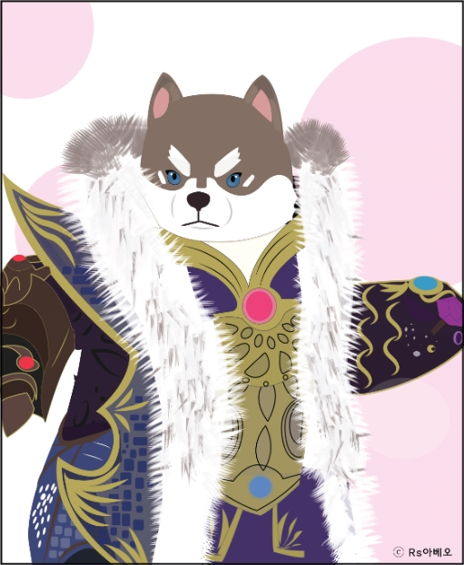

디지털인문예술
작품


기하학적 드로잉
-기하학적인 이미지를 상상한 후 어도비 일러스트를 사용하여 시각화 했다.

게임케릭터 드로잉
-테라m 이라는 모바일 게임을 보고 디지털인문예술 수업에서 배운 일러스트 툴을 이용하여
드로잉 하였다.

영화 범죄도시 장쳰 드로잉
-영화 범죄도시를 본 후 영화 등장인물 장쳰을 일러스트 툴을 이용하여 드로잉 하였다.

리무버 포스터
-포스터 제작에 사용 할 제품을 정한 후 포스터 제작을 하였다. 제품 중 리무버를
선택하여 리무버 포스터를 제작하였다. 포스터의 컨셉은 겨울왕국 X HERA 이다.
진한 화장을 하고 있는 엘사을 HERA의 리무버가 한번에 지워버린다는 것을 표현했다.